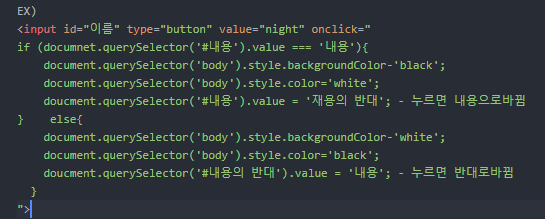
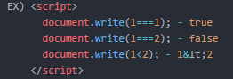
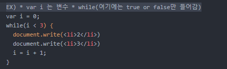

script
Java Script의 기본document.write();
웹에다 글씨 출력할 때 사용한다.콘솔(console)
Web 검사에서 JS 바로 사용도와주는 명령어
.length - 문자열의 갯수를 알려주는 단어
.toUpperCase() - 대문자,알파벳
.indexOf() - 찾고자 하는 값을 넣어라.
조건문(IF)
if(true or false){ 내용 } else{내용 } 리펙토링(retactoring)
중복된 코드를 낮추고 다시 개선하는 작업으로 틈틈히 해줘야 한다.비교연산자(Comparison operators)
ex) ===,<(<) 블리언(Boolean)
ex) true, false반복문
배열이나 반복적인 처리를 할 때 사용한다. 함수(function)
예시) function 원하는 이름(){원하는 내용;
}
원하는 내용에 가서 원하는이름(); 작성해주면 함수가 적용된다.